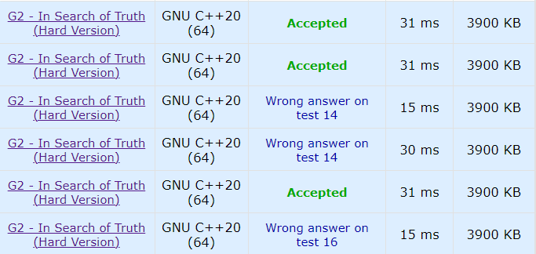

Codeforces 1840G In Search of Truth
题目来自 Codeforces Round #878 (Div.3) G。link (easy), link (hard)
This article provides a feasible solution to a certain competitive programming problem. If you have better solutions, feel free to share with me!
Problem Description
一个转盘分为 \(n\) 块 (\(1\leq n\leq 10^6\)) ，上面的数字是 \(1-n\) 的一个排列。你并不知道 \(n\) 的值。
初始时，指针指向数字 \(x\)。你可以向评测机询问从当前状态顺时针 (\(+\)) 或逆时针 (\(-\)) 旋转 \(k\) 块后，指针指向的数字是多少。你可以询问至多 \(2023\) (easy version) 或 \(1000\) (hard version) 次。
你需要确定 \(n\) 的值。
Tutorial
最朴素的解法：初始 \(a_1=x\)，以步长为 \(1\) 询问，直到找到某个 \(a_t=a_1=x\)。此时易知 \(t=n\)。然而这个方法需要 \(O(n)\) 次询问，远远超过限制的询问次数。
观察到询问次数 \(\approx \sqrt{n}\)，考虑应用根号分块思想。(块的大小 \(\sqrt{n}=1000\))
Easy Version (G1)
初始 \(a_1=x\)，以步长为 \(1\) 询问 \(999\) 次得到第一个块 \(b_1=\{a_1,a_2,...,a_{1000}\}\)。接下来，由 \(a_{1000}\) 开始，以步长为 \(1000\) 继续询问，直到发现某个数 \(a_t\in b_1\) (在第一个块中出现过)，至此找到了一个长度为 \(n\) 的循环。
可以证明，当 \(1000\leq n\leq 10^6\) 时，直到找到重复元素所作的询问次数不会超过 \(1000\) 次。所以找到 \(n\) 所需的总询问次数为 \(999+1000=1999\leq 2023\)。
以步长为 \((+)1000\) 进行询问实际上是遍历所有块的块尾元素。这里分块思想的单调性体现在，若块尾元素并未在 \(b_1\) 中出现过，则该块尾元素所在块的所有元素均不会在 \(b_1\) 中出现。
Hard Version (G2)
Hard version 的处理就有点 tricky 了；需要应用随机化改进 G1 中的算法。
初始 \(a_1=x\)，以随机步长询问 \(k\) 次，得到一系列 \(n_1,n_2,...,n_k\in[1,n]\)。令 $m=(n_1,n_2,...,n_k) $， 其与 \(n\) 之间的距离 \(d=n-m\)。
假设当前的位置为 \(p\) (即上一次询问
\(n_k\) 所对应的位置)，先以步长为 \(1\) 询问 \(t\) 次 ( \(t\) 为块的大小 sz)，返回 \(p\) 后再将转盘顺时针旋转 \(m\) \((+m)\)。这里的巧妙之处在于，顺时针旋转
\(m\) 相当于逆时针旋转
\(d\) \((-d=-n+m)\)。此时我们再应用 G1
中的方法求得长度 \(d\)。最后计算 \(n=m+d\)。
重点在于，如何平衡 \(k\) 与 \(t\) 的值，使得总询问次数不能超过 \(1000\)，同时得到 \(n\) 的概率足够大。需要满足：
- \(k+2t\leq 1000\) (对于块长 \(t\)，执行 G1 中的算法需要 \(2t\) 次询问)
- \(t^2\geq d\) (根据 G1 中的算法，对于某个待求长度 \(d\)，需要块长 \(t\geq \sqrt{d}\))
因此，对于某个 \(k\)，存在最优 \(d=(\frac{1000-k}{2})^2\)。也就是说，在随机取得的 \(n_1,n_2,...,n_k\) 中最大的 \(m\)，应该有相当大的概率落在 \([n-d,n]\) 即 \([n-(\frac{1000-k}{2})^2,n]\) 中。易知概率为 \(\Pr[\mathtt{valid}]=1-(\frac{n-d}{n})^k\)。
取 \(n=10^6\)，\(k\in[200,400]\) (以 \(k=200\) 为例)，\(\Pr[\mathtt{valid}]=1-7.2\times 10^{-16}\)，是一个相当大的概率了。
Code Implementation
Easy Version (G1)
1 |
|
Hard Version (G2)
事实证明，随机性确实影响有点大；这与理论计算相悖，因为根据理论，取 \(k\in[200,400]\)，成功的概率都十分逼近 \(1\)。可能是伪随机在作祟，也有可能是其他奇奇怪怪的原因。
经简单测试，取 \(k=400\)，块长
(sz) \(t=\frac{1000-k}{2}=300\) 正确率最高。

1 |
|